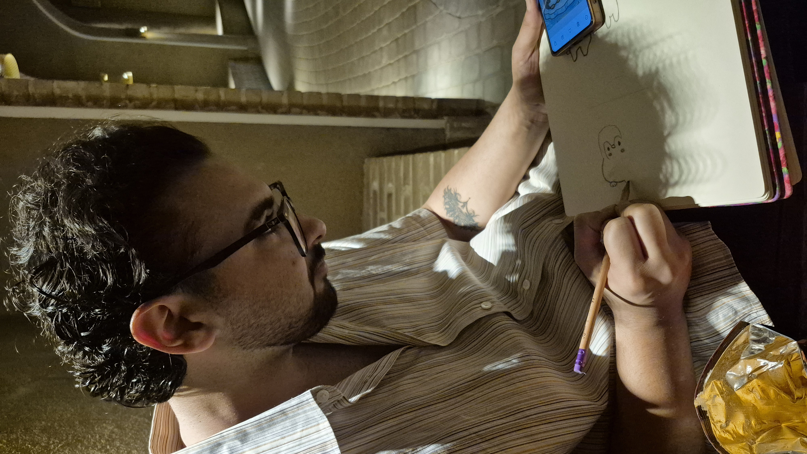
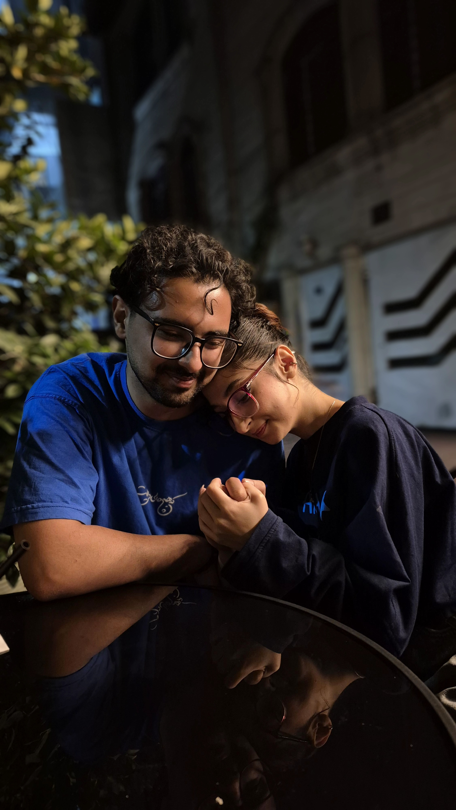
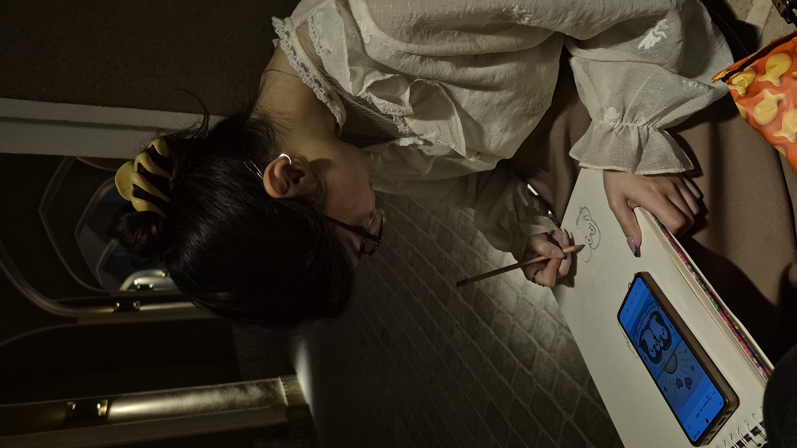
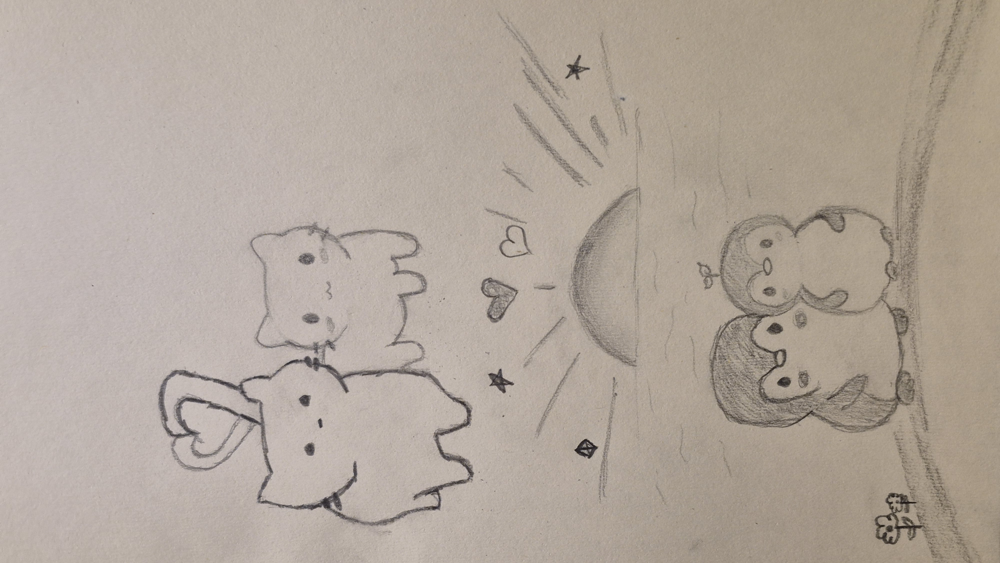
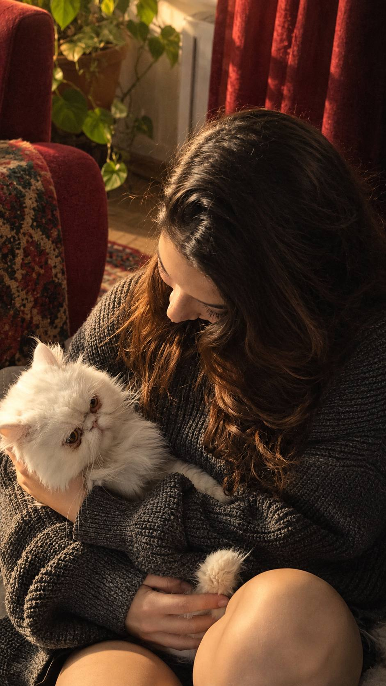
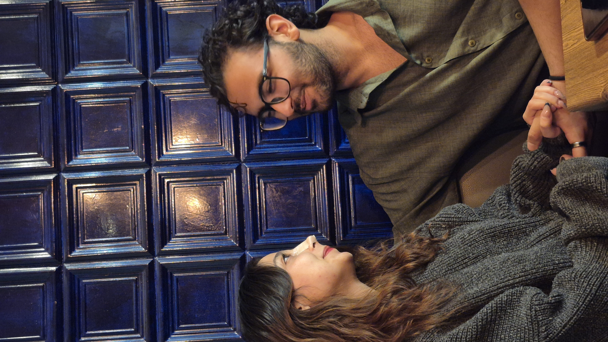

خاطرهی اول
یادتا اولین بار چقد واسه اولین کیسمون عذاب کشیدیم؟
برای تو، رومیِ من
بعضی آشناییها ساده شروع میشن؛
اما تا عمق قلب آدم ریشه میدونن.
01 · اولین ماهِ ما
ورود به دنیای ماقصهی ما از یک برنامهی ساده شروع شد؛ از میان آشناییهایی که شاید قرار بود زود فراموش بشن. اما بعد، تو اومدی...

اولین جرقهی قصهی مامن دنبال معجزهای نبودم؛ اما تو اومدی و معنای خیلی چیزها رو عوض کردی.
از یک آشنایی معمولی، رسیدم به آدمی که حضورش برای من شبیه پیدا کردن یک تکهی گمشده از آسمونه؛ چیزی که نمیدونستم دنبالش میگشتم، تا وقتی که پیداش کردم.
شاید هنوز اول راه باشیم، اما همین یک ماه هم جا برای کلی حس و خاطره داشته.

یادتا اولین بار چقد واسه اولین کیسمون عذاب کشیدیم؟

هرموقه بهم نگاه میکنی مثل روز اول برام تازگی داره و قلبمو میلرزونه

بنظرم عشق واقعیمون قشنگ ترین خاطرمونه
رومیِ من، بعضی زیباییها فقط دیده نمیشن؛ آدم باهاشون زندگی میکنه. تو برای من فقط یک چهرهی ماه و یک لبخند دوستداشتنی نیستی؛ تو حسی هستی که با حضورت به روزهای معمولی من معنا میدی.

ماه من، همینجارومینای عزیزم،
نمیدونم چطور باید از چیزی حرف بزنم که از کلمهها بزرگتره. تو وارد زندگی من شدی، اما کمکم از یک حضور ساده فراتر رفتی؛ شدی بخشی از فکرهای بیهوا، لبخندهای ناگهانی و آرزوهایی که از این به بعد، تصویر تو هم توشون هست.
این یک ماه شاید در تقویم فقط چند ورق باشه، اما برای من شروع قصهایه که دلم میخواد با حوصله بنویسمش؛ نه فقط در روزهای قشنگ، که در روزهای سخت هم. میخوام شنوندهات باشم، کنارت یاد بگیرم و کاری کنم که دوست داشتنم فقط در حرفهای قشنگ خلاصه نشه.
دختر کوچولوی من، ممنون که از یک آشنایی ساده، چیزی ساختی که اینهمه برام عزیزه. من نمیتونم آینده رو پیشبینی کنم؛ اما میتونم با تمام صداقتم انتخاب کنم که برای ساختن فرداهامون تلاش کنم، با احترام، مهربونی و دلی که تو رو جدی دوست داره.
ماهگرد اولمون مبارک، رومیِ من.
با عشق، ایلیا
تو آمدی و شبم آسمانِ روشن شد
سکوتِ خستهی قلبم پُر از ترانه شدن شد
اگرچه قصهی ما تازه اولِ راه است
دلم کنار تو مشتاقِ فصلهای شدن شد
نه وعده میدهم دنیا همیشه گلباران
نه میرسد همهی روزها بهار و چراغان
فقط بمان که بیاموزم، میانِ هر طوفان
چگونه عشق بسازیم؛ آرام، راست، فراوان
هر پاکت رو لمس کن؛ یه تکه حرف از دلم باز میشه.
قول نمیدم همیشه همهچیز بینقص باشه؛ قول میدم برای بهتر کردنش سهم خودم رو جدی بگیرم.
وقتی حرفی در دلت هست، با حوصله گوش بدم؛ نه فقط برای جواب دادن، برای فهمیدنت.
اگر اختلافی پیش اومد، بهجای رنجوندن همدیگه، دنبال راهی برای حل کردنش باشیم.
محبتم رو فقط برای مناسبتها نگه ندارم؛ توی روزهای عادی هم نشونش بدم.
برای اعتماد، احترام و آرامش بینمون مراقبت و تلاش کنم.
کنار هم رشد کنیم؛ طوری که هر دومون بتونیم خودِ واقعیمون باشیم.
اینها فقط چند آرزوی کوچیکن؛ تو میتونی فهرست رو با رؤیاهای خودتون کامل کنی.
برای هم کتاب بخونیم و وسط قصهها، از دنیای خودمون حرف بزنیم.
بریم جاهایی که تا حالا ندیدیم و برای خودمون خاطره بسازیم.
آهنگهایی پیدا کنیم که بعداً با شنیدنشون یاد هم بیفتیم.
ازینجا بریم و زندگیه موردعلاقمونو بسازیم

یک روز، یک خاطرهی دیگررومی جان، این پایان قصه نیست؛ فقط مکث کوچیکی بین فصلهاییه که هنوز ننوشتهایم.
برای رومینای من
نه با وعدهی یک زندگی بیدردسر؛ با امیدِ ساختن روزهایی که توش همدیگه رو میشنویم، انتخاب میکنیم و برای عشقمون جا باز میکنیم.
اگر روزی این صفحه قدیمی شد، دلم میخواد دلیلش این باشه که خاطرههای واقعیمون از کلمههاش بیشتر شده.
ماهگرد اولمون مبارک، رومی من. این فقط شروعشه.
دوستت دارم؛ امروز، و با تلاشی که برای فرداهامون میکنم. ایلیا ♡ساختهشده با عشق، برای یک ماهِ کوچک و یک آرزوی بزرگ.
بازگشت به ستارهی اول ↑